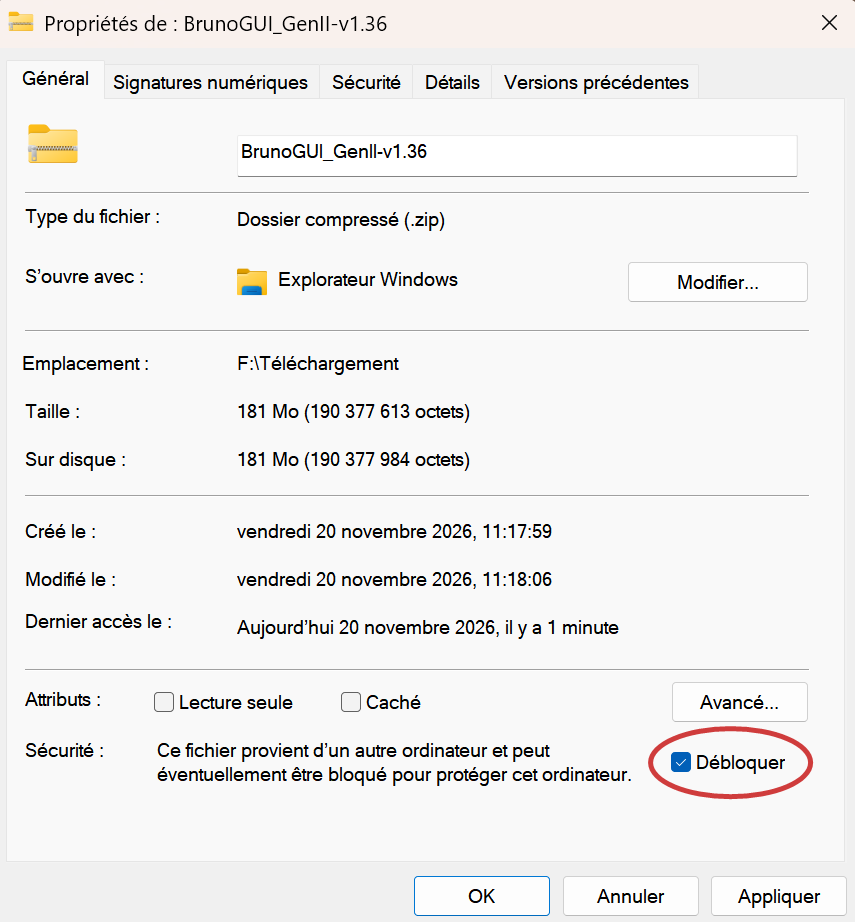

BrunoGUI
Analyser ses parties d'échecs et jouer contre l'ordinateur, gratuitement
Pour Windows 10 et 11 · programme libre · en français et en anglais

Installer en 3 étapes
- Téléchargez le zip (bouton ci-dessus).
- Avant de le décompresser : clic droit sur le zip > Propriétés > cochez « Débloquer » > OK.

- Décompressez-le où vous voulez, puis lancez
BrunoGUI_GenII.exe.
Rien d'autre à installer. Pour désinstaller, il suffit de supprimer le dossier.
Windows affiche « Windows a protégé votre ordinateur » ? Cliquez sur « Informations complémentaires », puis sur « Exécuter quand même ». Le programme, gratuit, n'est simplement pas signé numériquement : cet avertissement ne signale pas un problème.
Ce que vous pouvez faire
- Analyser vos parties : imprécisions, erreurs, gaffes et bons coups, précision en %, sacrifices, menaces, nom de l'ouverture.
- Importer vos parties de Lichess ou de Chess.com à partir de votre pseudo.
- « Et si j'avais joué un autre coup ? » : essayez une autre suite et voyez ce qu'en pense le moteur.
- Fichiers PGN : ouvrez, annotez, commentez, enregistrez vos parties ; copiez une position en image pour un forum ou un mail.
- Jouer contre Stockfish ou Rodent IV, à votre niveau (réglage de l'Elo), avec ou sans pendule.
- Affronter des styles de champions : Tal, Petrosian, Fischer, Kasparov…